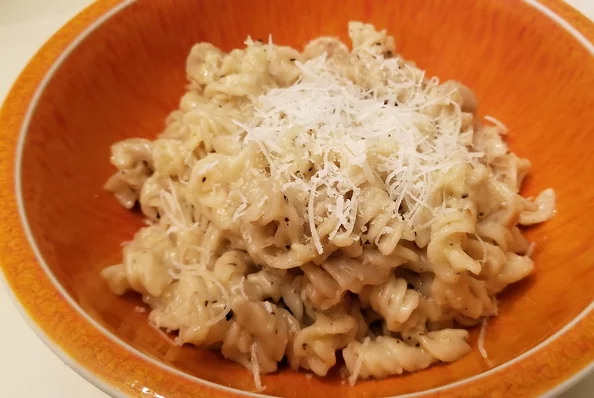

Spaghetti Cacio e Pepe

Description
Ingredients
- 1 pound spaghetti
- 6 tablespoons olive oil
- 2 clovers garlic, minced
- 2 teaspoons ground black pepper
- 1 3/4 cups grated Percorino Romano Cheese
Steps
- Bring a large pot of lightly salted water to a boil. Cook spaghetti in the
boiling water, stirring occasionally until tender yet firm to the bite, about
10 minutes. Scoop out some of the cooking water and reserve. Drain spaghetti.
- Heat oil in a large skillet over medium heat. Add garlic and pepper; cook and stir
until fragrant, 1 to 2 minutes. Add spaghetti and Pecorino Romano cheese. Ladle in
1/2 cup of reserved cooking water; stir until cheese is melted, about 1 minute. Add
more cooking water until sauce coats spaghetti, about 1 minute more.